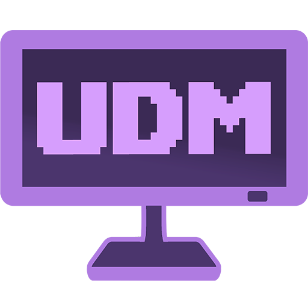

Ultimate Display Manager
UDM helps you manage monitor layouts, resolution, refresh rate, orientation, DPI scaling, HDR, cloning, display positioning, and profile-based setup switching from one app that lives in your system tray.
It is designed to feel simple when you just want to fix something quickly, while still giving power users deeper control through profiles, recovery tools, and command-line workflows.

What is UDM?
Ultimate Display Manager is a Windows desktop utility for managing multi-monitor setups with less friction than the built-in Windows display controls.
Main app overview / Options window hero image
Installation
UDM installs through the Microsoft Store and keeps its writable data outside the app install folder.
Where your files go
- App data and settings: stored under
%LOCALAPPDATA%\Ultimate Display Manager - Profiles, logs, and backups: stored under
%USERPROFILE%\Documents\Ultimate Display Manager - Install folder: not used for writable data
Launching UDM
After installation, you can launch UDM from the Start menu. You can also run udm from a terminal,
the Run dialog, or a shortcut.
.udmp extension. On Pro, double-clicking a profile file can apply it directly.
First run & quick start
UDM lives in the system tray after launch, so most of your day-to-day control starts there.
What happens when you launch it
- The UDM tray icon appears in the Windows notification area.
- Lite users get a one-time welcome notification.
- Pro users who have not created a failsafe yet are taken straight to the Options window so they can finish first-time setup.
- If a failsafe already exists, UDM follows your normal startup preference and either opens the Options window or starts minimized to tray.
Tray icon behavior
A good first five minutes
The Options window
The Options window is the main control surface for UDM.
Top area
- The app title opens the About window.
- The version label is shown beside the title.
- The Settings button opens the Settings window.
Failsafe row Pro
If you use Pro, the Options window includes a failsafe button near the top. Before setup it reads Set failsafe (Setup). After setup it changes to Update failsafe layout.
Profile row Visible in both tiers, active in Pro
- Profile dropdown — lists saved profiles
- Load profile — applies the selected profile
- Save current layout — saves the live display state as a profile
- … — opens more profile actions such as rename, export, import, and recovery
In Lite, these controls stay visible but route you to the upgrade flow instead of performing profile actions.
Main center area
- Layout editor — a visual canvas of your displays
- Display action buttons — fast actions for the current selection Pro
- Monitor list — the detailed table view of your displays Pro
Bottom area
- Edit hotkeys… opens the Hotkey Editor
- Close hides the window
- Lite users see Upgrade! in the footer
- Pro users see Donate!, which can be hidden in settings if preferred
Full Options window with labels or clean crop
Monitor list & per-monitor actions
UDM gives you both quick tray actions and a more detailed monitor list for precise work.
Monitor list Pro
- Shows each known display in a sortable multi-column table.
- Supports keyboard control, multi-select, and double-click to open Display Properties.
- Can remember your chosen sorting when that setting is enabled.
Why there are two monitor menus
Available per-monitor actions
- Set as primary
- Solo a display
- Enable or disable a display
- Extend in several ways, including variants that re-enable displays
- Clone one display to another, to a group, or to all compatible displays
- Stop cloning
- Change orientation, resolution, refresh rate, and scale
- Toggle HDR on supported displays
- Power a display on or off through DDC/CI on supported hardware
- Copy common monitor identifiers and details
- Open Display Properties
Display Properties window
The Display Properties window gives you a focused editor for one display. From there you can toggle enable state, power, primary status, orientation, resolution, refresh rate, DPI scaling, and HDR when supported, then apply several changes together.
Display naming Pro
You can give a display a custom name to make similar monitors easier to tell apart. That name shows up throughout the app and can also be used in CLI targeting.
Layout editor
The layout editor is the visual heart of UDM and is available in both Lite and Pro.
What it shows
Each active or known display appears as a draggable rectangle, arranged in roughly the same way Windows sees your monitor layout.
How to use it
- Click a display to select it.
- Drag a display to reposition it.
- Use Ctrl + click to add or remove displays from the selection.
- Drag empty space to draw a selection box.
- Drag a multi-selection to move a group together.
- Hold Ctrl while dragging for finer movement.
- Snapping helps align edges and corners cleanly.
Tabs above the canvas
When relevant, UDM shows tabs for active displays, inactive displays, and clone-group views so you can focus on the right slice of your setup.
Selection sync Pro
In Pro, selecting a display in the layout editor also highlights its row in the monitor list, and selecting a row in the list highlights the display on the canvas.
Identify overlay
Use the identify control in the app or run udm --identify to show a large number on each real monitor so you can match the on-screen layout to your physical desk.
Layout editor close-up or identify overlay capture
Profiles Pro
Profiles let you save complete display setups and switch between them later.
What a profile remembers
A profile saves the live state of your display setup, including topology, primary display, resolution, refresh rate, orientation, HDR state, DPI scale, positioning, and active cloning.
What you can do with profiles
.udmp file into UDM..udmp file for sharing or backup.Where profile controls appear
- The profile row in the Options window
- The Profiles submenu in the tray menu
- The tray shortcut for creating a profile from the current layout
- The tray command for reloading the most recently loaded profile
Failsafe recovery Pro
Failsafe is UDM’s recovery safety net for risky or unusual display transitions.
What it is
Your failsafe is a saved, known-good display layout. If something goes wrong during a switch, UDM can use that layout to bring you back to a working state.
Why it matters
Some display changes can fail in messy ways because of drivers, disappearing displays, clone-group edge cases, or unusual hardware situations. Failsafe exists so you are less likely to get stranded in a broken configuration.
How to set it up
- Open the Options window.
- Click Set failsafe (Setup) if you have not created one yet.
- Later, use Update failsafe layout whenever your preferred safe layout changes.
How to trigger it
- From the tray menu
- From the dedicated failsafe hotkey
- Automatically, when UDM can recover from a failed or risky operation
Safe switching
Pro also includes a Safe switching setting that adds extra caution and delay to certain profile transitions. Its current on/off state is shown in the Options window footer.
Theming & customization
UDM lets you tailor both the look of the app and, in Pro, how much UI is visible.
Theme options
- System — follows your Windows theme
- Light — bright interface with its own accent color
- Dark — dark interface with its own accent color
Both Light and Dark themes have separate accent color controls, each with a default reset button.
Customize UI Pro
Pro users can open Customize UI… from Settings to decide how much of the Options window and monitor menus they want to keep visible.
- Hide or show the display action button row
- Hide or show the monitor list
- Hide or show the info footer
- Choose the number of visible monitor list rows
- Hide monitor-menu categories you never use
CLI reference
UDM includes a real command-line interface, so you can control the app from Command Prompt, PowerShell, Windows Terminal, the Run dialog, scripts, or shortcuts.
Getting started
The main command is simply udm. Many commands can be run while the app is closed, and UDM will perform the action and exit cleanly.
If UDM is already running, the command can hand off to the existing instance instead of launching a second copy.
udm --help
udm --version
udm --list-displays
udm --statusRead-only and discovery commands
| Command | What it does |
|---|---|
--help | Show the grouped help output |
--version | Print the installed app version |
--status | Show runtime status, with display-aware output when combined with a selector |
--list-displays | List displays and their key metadata |
--list-settings | List visible user settings for your current tier |
--list-hotkeys | List the visible hotkey rows |
--list-profiles | List saved profiles Pro |
--list-backups | List deleted profiles that can be restored Pro |
Choosing which display to target
You can target displays with selectors such as:
primaryallactiveindex:2serial:...name:Office Monitorid:...
udm --display index:2 --set-primary
udm --display primary --resolution 2560x1440
udm --display name:"Desk OLED" --hdr offCommon direct-control commands
| Command | What it does |
|---|---|
--enable / --disable | Enable or disable the target display |
--set-primary | Make the target display the primary display |
--resolution <WxH> | Set the resolution |
--refresh <Hz> | Set the refresh rate |
--orientation <value> | Change orientation |
--hdr on|off|toggle | Control HDR on supported displays |
--scale <percent> | Set DPI scaling |
--power on|off | Power a display on or off through DDC/CI when supported |
Set several properties at once
Use --set when you want one final state from a single command.
udm --display primary --set resolution=2560x1440 refresh=144 hdr=offTopology and layout helpers
| Command | What it does |
|---|---|
--topology extend | Switch to extended desktop mode |
--topology clone | Switch to a cloned setup |
--topology internal | Use the built-in display only, when available |
--topology external | Use external display output only |
--identify | Show the identify overlay on your displays |
--properties-open <display> | Open the Display Properties window for a specific display |
--options | Open or focus the Options window |
--minimize | Minimize UDM |
Settings, startup, and app helpers
| Command | What it does |
|---|---|
--set-setting key=value | Change one or more visible app settings |
--restoredefault | Reset settings to defaults |
--startup-task on | Enable Start with Windows |
--startup-task off | Disable Start with Windows |
--upgrade | Open the UDM Pro purchase flow |
--update | Check for app updates |
Profiles and recovery Pro
| Command | What it does |
|---|---|
--profile <name> | Load a saved profile |
--save-profile <name> | Save the current layout as a profile |
--import <path> | Import a .udmp file |
--export-profile <name> <path> | Export a profile |
--rename-profile <old> <new> | Rename a profile |
--delete-profile <name> | Delete a profile |
--list-backups | List deleted profiles that can be recovered |
--restore-backup <index|filename> | Restore a deleted profile backup |
--failsafe-set | Create your first failsafe from the current layout |
--failsafe-update | Refresh the existing failsafe from the current layout |
--rename-display | Set or clear a custom display name |
Output and scripting flags
| Flag | Use it for |
|---|---|
--json | Machine-readable output |
--quiet | Suppress normal output and prompts |
--interactive | Allow prompts, message boxes, and upgrade UI |
--dry-run | Light validation before running a command |
--force | Override certain guardrails for risky or overwrite-style actions |
--exit | Close a running UDM instance after the command finishes successfully |
--force-exit | Close a running instance even if the command fails |
Helpful examples
udm --display index:2 --set-primary
udm --display primary --set resolution=2560x1440 refresh=144 hdr=off
udm --display active --power off
udm --topology internal
udm --profile "Work Layout"
udm "C:\path\to\profile.udmp"
udm --save-profile "Movie Mode"
udm --update --quiet --json
udm --optionsExit codes
| Code | Meaning |
|---|---|
0 | Success |
1 | Usage or parse error |
2 | Not found |
3 | Validation or unsupported request |
4 | Requires Pro |
5 | Execution failed |
6 | Conflict or blocked by current state |
7 | Helper or system failure |
Recipe mode
UDM can also run JSON recipe files with --run <file>. Recipes stop on the first failed step and can combine direct display commands,
waits, profile actions, and a few UI boundary helpers.
{
"steps": [
"--topology extend",
"--wait 1000",
"--display primary --set resolution=2560x1440 refresh=144"
]
}
You can also pass a .udmp file path directly to UDM, which is especially useful for imported profile files and shortcuts.
UDM Pro
UDM Pro expands UDM from direct display control into layout persistence, recovery, and deeper customization.
How to upgrade
- Click Upgrade! inside the app
- Click any locked Pro control in the Options window
- Use
udm --upgradefrom the command line - Purchase the add-on from the Microsoft Store listing
Restoring your purchase
UDM Pro is a durable purchase tied to your Microsoft account. Reinstalling the app on the same account should restore access automatically.
Troubleshooting
A few quick checks solve most common issues.
Where to find logs
Turn on Enable support logging in Settings → Advanced. Logs are then written to
%USERPROFILE%\Documents\Ultimate Display Manager\Logs.
Where your data lives
- App settings and cache:
%LOCALAPPDATA%\Ultimate Display Manager - Profiles, logs, and recovered items:
%USERPROFILE%\Documents\Ultimate Display Manager - Need help finding them? Use the Open data folder button in Settings → Advanced.
UDM Pro looks locked after purchase
- Restart UDM
- Make sure the Microsoft Store is signed into the account that purchased Pro
- Run
udm --updateorudm --upgrade --quietto refresh the status
A CLI command says it requires Pro
That is expected for profile, failsafe, recovery, and other Pro-only commands. You can launch the purchase flow with udm --upgrade.
Resetting settings
Use Restore all to default in Settings to reset most app settings. The CLI equivalent is udm --restoredefault, which requires --force when run non-interactively.
Mixed-DPI setups
UDM is designed to work correctly on mixed-DPI setups, but the window may look a little softer when moved between monitors with very different scaling values.
Reporting a bug
The best report includes a log file, your Windows version, a short description of your monitor setup, what you did, and what you expected to happen. Contact: lucid.direct@hotmail.com
Privacy & data
UDM stores its working data locally on your PC and does not operate its own data-collection service.
- Your profiles, settings, logs, and app data stay on your machine.
- UDM does not send usage data to a UDM-run server.
- Store purchase and entitlement checks go through Microsoft Store services.
- Update checks also go through Microsoft Store services.
Read the full privacy policy for the formal privacy statement.
Changelog
A quick history of the public UDM releases covered by this documentation.
v1.1 — major CLI and workflow update
- Full CLI implementation for direct display control, scripting, profile workflows, recovery tools, and JSON output
- Display naming for cleaner monitor identification Pro
- Stronger failsafe recovery behavior Pro
- Profile export and direct profile launching improvements Pro
- Support logging improvements, including Lite availability
- General reliability and packaging improvements
v1.0.x — initial Microsoft Store release
- Released the tray menu, Options window, layout editor, theming system, and Display Properties window
- Brought core display control for topology, resolution, refresh rate, orientation, scale, HDR, cloning, and DDC/CI power workflows
- Introduced Pro features including profiles, failsafe, monitor list, UI customization, and profile hotkeys
- Included the first basic command-line support, later expanded heavily in v1.1